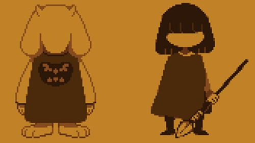
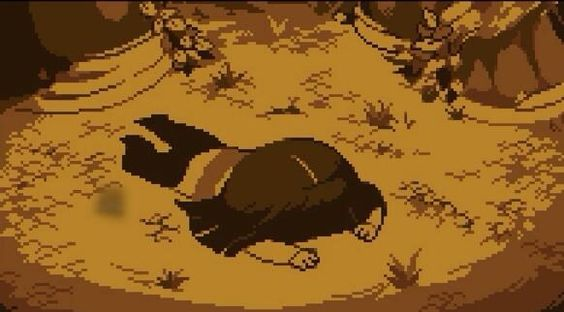

Como tudo iniciou!

A Origem dos Monstros e Humanos
Muito antes dos eventos de Undertale, monstros e humanos coexistiam na superfície da Terra. Apesar de suas diferenças,
eles compartilhavam o mesmo mundo. No entanto, a relação entre as duas raças não era harmoniosa.
A Guerra dos Monstros e Humanos
Eventualmente, um conflito irrompeu entre humanos e monstros. Os humanos, temendo o poder dos monstros e desejando
garantir sua própria segurança, declararam guerra contra os monstros. Os humanos possuíam uma força esmagadora,
tanto em termos de números quanto de poder, particularmente devido à sua capacidade de usar a alma humana, que
era mais forte que a alma de um monstro.
A Derrota dos Monstros
Os monstros foram rapidamente derrotados pelos humanos. Após a derrota, os humanos selaram os monstros no Subterrâneo
com uma barreira mágica, criada com a ajuda de sete magos humanos. Esta barreira era poderosa o suficiente para impedir
que qualquer monstro escapasse. Apenas uma alma de um humano e de um monstro combinadas poderiam atravessar a barreira.
Vida no Subterrâneo
Após serem selados no Subterrâneo, os monstros começaram a construir suas vidas em seu novo lar. Eles criaram várias cidades
e vilarejos, como Home, Snowdin, Waterfall, Hotland e, eventualmente, New Home, a capital.
A Lenda do Herói e do Vilão
Dentro do Subterrâneo, uma profecia começou a circular entre os monstros. Ela dizia que um dia um humano cairia no Subterrâneo
e que esse humano teria o poder de salvar ou destruir todos os monstros. Isso criou uma mistura de esperança e medo entre os
habitantes do Subterrâneo.
Asriel Dreemurr e Chara
A história dos Dreemurrs, a família real do Subterrâneo, também é crucial para a lore de Undertale. Rei Asgore Dreemurr e Rainha
Toriel Dreemurr governavam os monstros. Um dia, uma criança humana chamada Chara caiu no Subterrâneo. Asriel Dreemurr, o filho
do rei e da rainha, encontrou Chara e eles se tornaram inseparáveis, como irmãos. Chara foi adotado pela família Dreemurr e
viveu entre os monstros.
O Plano de Chara
Infelizmente, Chara tinha um plano sombrio. Chara desejava destruir a barreira que mantinha os monstros presos e acreditava que
a única maneira de fazer isso era usar as almas dos humanos. Chara se envenenou intencionalmente e, no leito de morte, pediu a
Asriel para levar sua alma de volta à superfície.
A Tragedia
Asriel, em um ato de amor fraternal, absorveu a alma de Chara, ganhando um imenso poder. Ele levou o corpo de Chara para a aldeia
humana, mas os humanos, vendo um monstro, atacaram-no. Asriel se recusou a lutar contra os humanos e retornou ao Subterrâneo,
gravemente ferido, onde sucumbiu aos ferimentos e morreu. Seu pó se espalhou pelo jardim do castelo real.
A Determinação de Asgore
Devastado pela perda de seu filho adotivo e pela brutalidade dos humanos, Asgore Dreemurr declarou que qualquer humano que caísse
no Subterrâneo seria morto e sua alma seria usada para quebrar a barreira. Esse ato de desespero e desejo de vingança marcou o
início de uma nova era de sofrimento para os monstros.
O prsente
Este é o cenário em que o jogador entra no mundo de Undertale. Anos após a tragédia de Asriel e Chara, uma criança humana cai
no Subterrâneo, dando início aos eventos do jogo. A partir daí, o jogador tem a chance de influenciar o destino dos monstros
e humanos através de suas escolhas, seguindo as rotas pacifista, genocida ou neutra.

A criança, que não tinha nome no começo, acordou em um campo de flores douradas. Logo encontrou Toriel, uma gentil criatura
que parecia uma mistura de cabra e humana. Toriel acolheu a criança como se fosse sua própria, oferecendo abrigo e comida
quente. Mas a criança, determinada a voltar para a superfície, decidiu seguir em frente.
Pelo caminho, a criança encontrou diversos monstros, cada um com suas próprias histórias e personalidades. Havia Sans e Papyrus,
dois irmãos esqueletos. Sans era relaxado e tinha um humor sarcástico, enquanto Papyrus sonhava em capturar um humano para ganhar
respeito. A criança também encontrou Undyne, a valente chefe da Guarda Real, e Alphys, a tímida cientista que tinha um amor secreto
por Undyne.
O caminho pelo Subterrâneo era perigoso, e a criança enfrentou muitos desafios. No entanto, o modo como enfrentava esses desafios poderia
mudar completamente o destino desse mundo subterrâneo.
|